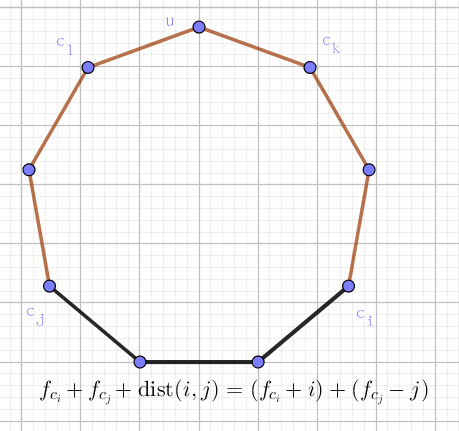

如果某个无向连通图的任意一条边至多只出现在一条简单回路 (simple cycle) 里，我们就称这张图为仙人掌图 (cactus)。所谓简单回路就是指在图上不重复经过任何一个顶点的回路。

举例来说，上面的第一个例子是一张仙人掌图，而第二个不是——注意到它有三条简单回路：$4 \to 3 \to 2 \to 1 \to 6 \to 5 \to 4$、$7 \to 8 \to 9 \to 10 \to 2 \to 3 \to 7$ 以及 $4 \to 3 \to 7 \to 8 \to 9 \to 10 \to 2 \to 1 \to 6 \to 5 \to 4$，而 $(2, 3)$ 同时出现在前两个的简单回路里。另外，第三张图也不是仙人掌图，因为它并不是连通图。
显然，仙人掌图上的每条边，或者是这张仙人掌图的桥 (bridge)，或者在且仅在一个简单回路里，两者必居其一。
定义在图上两点之间的距离为这两点之间最短路径的距离。定义一个图的直径为这张图相距最远的两个点的距离。
现在我们假定仙人掌图的每条边的权值都是 $1$，你的任务是求出给定的仙人掌图的直径。
第一行包括两个整数 $n, m$ ($1 \leq n \leq 50000, 0 \leq m \leq 10000$)。其中 $n$ 代表顶点个数，我们约定图中的顶点将从 $1$ 到 $n$ 编号。
接下来一共有 $m$ 行，代表 $m$ 条路径。每行的开始有一个整数 $k$ ($2 \leq k \leq 1000$)，代表在这条路径上的顶点个数。接下来是 $k$ 个 $1$ 到 $n$ 之间的整数，分别对应了一个顶点，相邻的顶点表示存在一条连接这两个顶点的边。
一条路径上可能通过一个顶点好几次，但是我们保证所有的边都会出现在某条路径上，而且不会重复出现在两条路径上，或者在一条路径上出现两次。
输出一行一个整数，这个数表示仙人掌图的直径长度。
正如红字说的一样，仙人掌中的边只有两种身份：一种是桥边，一种是环内边。因此，仙人掌有非常强的树的感觉，只是有些点以环的形式来呈现 (就如基环树只有一个环一样)。
因此对仙人掌的题，都可以跑 Tarjan 桥边的算法把桥边和环内边分割开来。
而 Tarjan 的本质就是 dfs，因此，任意一棵仙人掌都有它的 dfs 树，且非树边一定是后向边 (back edge，可以回忆一下前向边、后向边和横叉边的定义)。
并且对于每个环 $C$，总有一个顶点是最先被访问到的，我们把它叫做这个环的根 $r(C)$。
考虑 dfs 点 $u$ 时，如果对于子节点 $v$，有 $id[u] < low[v]$，那么 $(u, v)$ 是桥。如果 $v$ 已经被访问过 (且 $v$ 不是 dfs 树中 $u$ 的父节点)，说明遇到了环。这种情况对于一个环 $C$ 会出现两次，一次是从 $r(C)$ 到 $C$ 的末节点，另一次是 $C$ 的末节点到 $r(C)$。
为了避免重复，我们需要增加一个条件，$id[u] < id[v]$，即 $u$ 的 dfs 序小于 $v$ 的 dfs 序，此时一定是前者，即 $r(C)$ 到环的末节点。我们只需不断遍历 $v$ (在 dfs 树中) 的父节点，直到 $u$ ($= r(C)$)，我们就可以得到这个环的所有节点。
由于仙人掌的直径可不像树的直径暴力 dfs 两遍就做完了，因此需要 DP。记 $f_i$ 为 (在 dfs 树中) 以 $i$ 为根的子仙人掌中的点到 $i$ 的最长路径，则对于一个点 $u$，若它的子节点中有若干条是桥边 $(u, v_1), (u, v_2), \cdots, (u, v_k)$，则有 $$ f_u \gets \max_{1 \leq i \leq k} f_{v_i} + 1 $$
接下来考虑环。由于一个环是一个整体，每个点的地位都是平等的。因此我们可以选择一个 "环长 (zhǎng)" 来记录有关这个环的所有信息，其它点就不用自己更新 (把信息交给 "环长")。那么那个 "环长" 是谁呢？显然选那个环的根 $r(C)$。
那么对于 $u$，如果它是环 $C$ 的根，那么刚才讲过，在 dfs 时会遇到 $id[u] < id[v]$ 的情况，于是我们就找到了环。通过不断遍历 dfs 树中的父节点，可以得到环上的所有点，记为 $u, c_1, c_2, \cdots, c_k$。显然，它们之间的距离可以通过环长和它们在 dfs 树中的深度得到，这里就不赘述了，记 $a, b$ 的距离为 $\mathrm{dist} (a, b)$。
那么 $f_u$ 就清楚了，我们枚举环中的一个点 $c_i$，并取 $c_i$ 的最长路径 ($f_{c_i}$)，那么我们只需让它再 (走短边) 走向点 $u$，那么就可以更新 $f_u$ 了，即 $$ f_u \gets \max_{1 \leq i \leq k} \left( f_{c_i} + \mathrm{dist} (u, c_i) \right) $$
到这里，我们就可以成功更新所有的 $f_i$。但是！题目要求的是全局最长链，并不一定是以某个点为根的最长路径。
当然，在最后通过 $f_i$ 求答案也是可以的，但是在更新的时候求答案会更好。
考虑从桥边 $(u, v)$ 更新。此时，更新之前的 $f_u$ 应该是以 $u$ 为起点的最长路径 (长度)，于是，可以通过 $f_u + f_v + 1$ 来更新答案。
考虑对一个环 $C = (u, c_1, c_2, \cdots, c_k)$，环长为 $len = k + 1$。假设 $f_u$ 尚未更新，那么对任意两个点 $c_i, c_j$，答案就为 $f_{c_i} + \mathrm{dist} (c_i, c_j) + f_{c_j}$，显然这是 $O(len^2)$ 的，如果环大一点就 GG 了。
考虑这个值就是对任一个点，向左向右各枚举 $\left \lfloor \dfrac {len} 2 \right \rfloor$ 个点，然后计算答案。那么其实我们可以固定方向 (即只向左枚举 $\left \lfloor \dfrac {len} 2 \right \rfloor$ 个点，因为向右的会在另一个点中枚举到)，又因为环不好搞，于是我们可以将环复制一半拼到后面。这样就只需对于每个 $f_{c_i}$ 求出 $\max\limits_{i - \lfloor len/2 \rfloor \leq j \leq i} \left( f_{c_i} + (i-j) + f_{c_j} \right) = \max\limits_{i - \lfloor len/2 \rfloor \leq j \leq i} \left( (f_{c_i} + i) + (f_{c_j} - j) \right)$，于是可以通过单调队列维护 $f_{c_j} - j$ 即可。
故时间复杂度为 $O(len)$，总时间复杂度 $O(n)$ (仙人掌图的边数与点数同阶)。
#include <bits/stdc++.h>
#define N 51221
#define M 256101
using namespace std;
int V, E, pathes, ans;
int u, v, i;
int to[M], first[N], next[M];
int cnt, id[N], low[N];
int p[N], dep[N], f[N];
int cyc[N << 1], que[N << 1];
inline void up(int &x, const int y) {x < y ? x = y : 0;}
inline void down(int &x, const int y) {x > y ? x = y : 0;}
inline void addedge(int u, int v){
to[++E] = v; next[E] = first[u]; first[u] = E;
to[++E] = u; next[E] = first[v]; first[v] = E;
}
void cycle(int beg, int end){
int len = dep[end] - dep[beg] + 1, hen = len >> 1;
int i = len, x, h = 0, t = 1;
for(x = end; x != beg; x = p[x]) cyc[--i] = x; cyc[--i] = x;
memcpy(cyc + len, cyc, hen << 2);
que[0] = 0;
for(i = 1; i < len + hen; ++i){
for(; h < t && que[h] < i - hen; ++h);
up(ans, f[cyc[i]] + f[cyc[que[h]]] + i - que[h]);
for(; h < t && f[cyc[i]] - i >= f[cyc[que[t - 1]]] - que[t - 1]; --t);
que[t++] = i;
}
for(i = 1; i < len; ++i) up(f[x], f[cyc[i]] + min(i, len - i));
}
void dfs(int x){
int i, y;
id[x] = low[x] = ++cnt;
for(i = first[x]; i; i = next[i])
if(!id[y = to[i]]){
p[y] = x; dep[y] = dep[x] + 1;
dfs(y); down(low[x], low[y]);
if(id[x] < low[y]){ // bridge
up(ans, f[x] + f[y] + 1);
up(f[x], f[y] + 1);
}
}else if(y != p[x])
down(low[x], id[y]);
for(i = first[x]; i; i = next[i])
if(p[y = to[i]] != x && id[x] < id[y]) // cycle of cactus !
cycle(x, y);
}
int main(){
scanf("%d%d", &V, &pathes);
for(; pathes; --pathes)
for(scanf("%d%d", &cnt, &u); --cnt; u = v){
scanf("%d", &v); addedge(u, v);
}
dep[1] = p[1] = cnt = 0;
dfs(1);
printf("%d\n", ans);
return 0;
}
仙人掌的题其实并没有想象中那么可怕，只要搞清楚它和树的相似之处，只是增加一个环的处理，就能解决了。
坑1：注意单调队列的写法，以免多 (少) 删除元素。